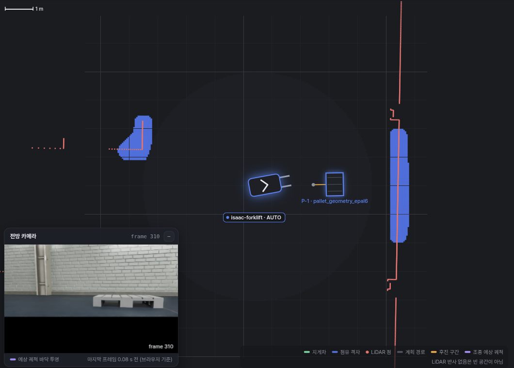
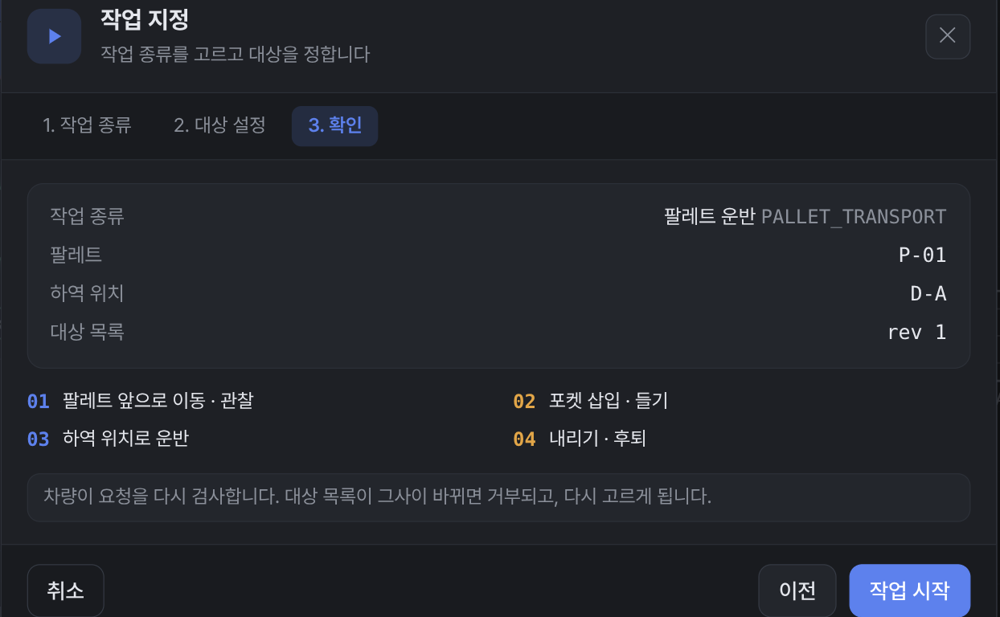
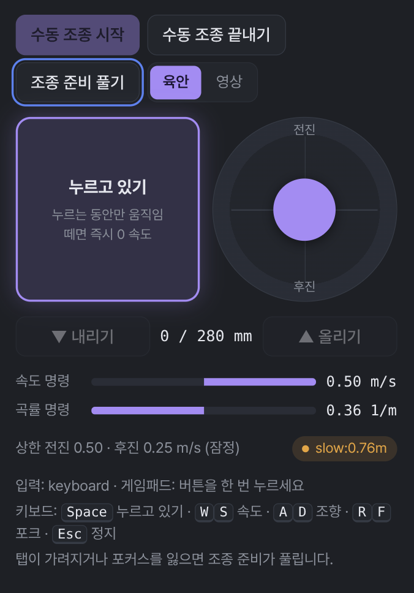
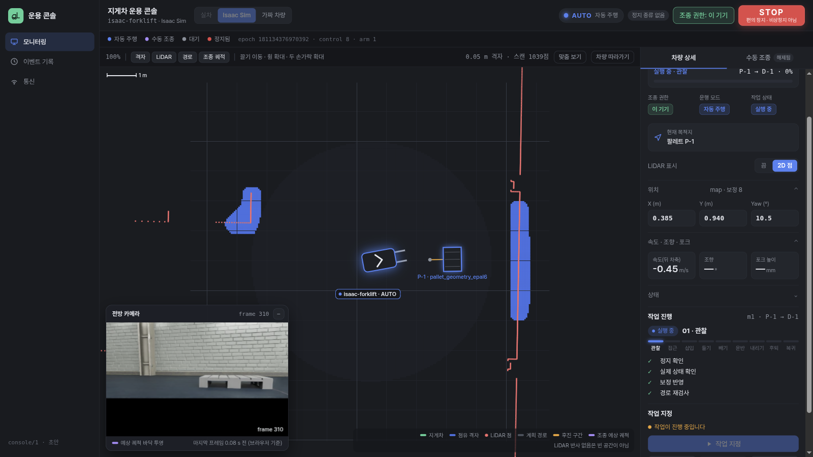
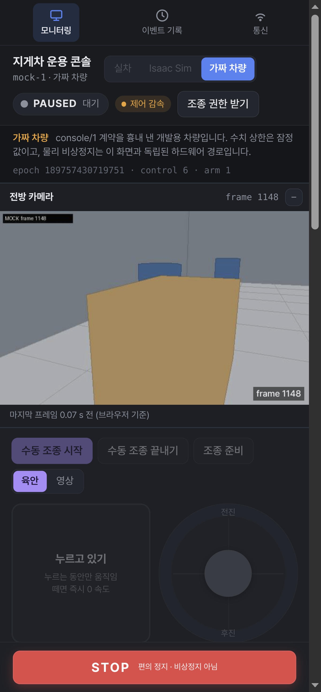
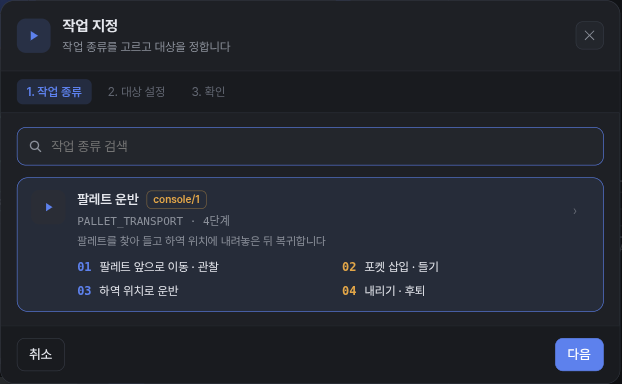
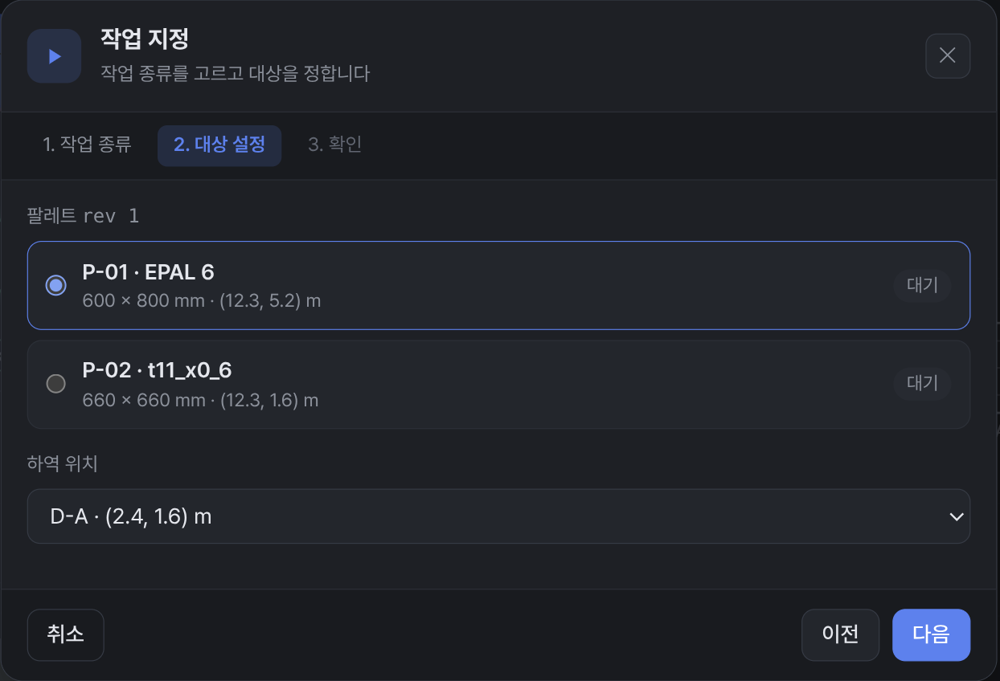
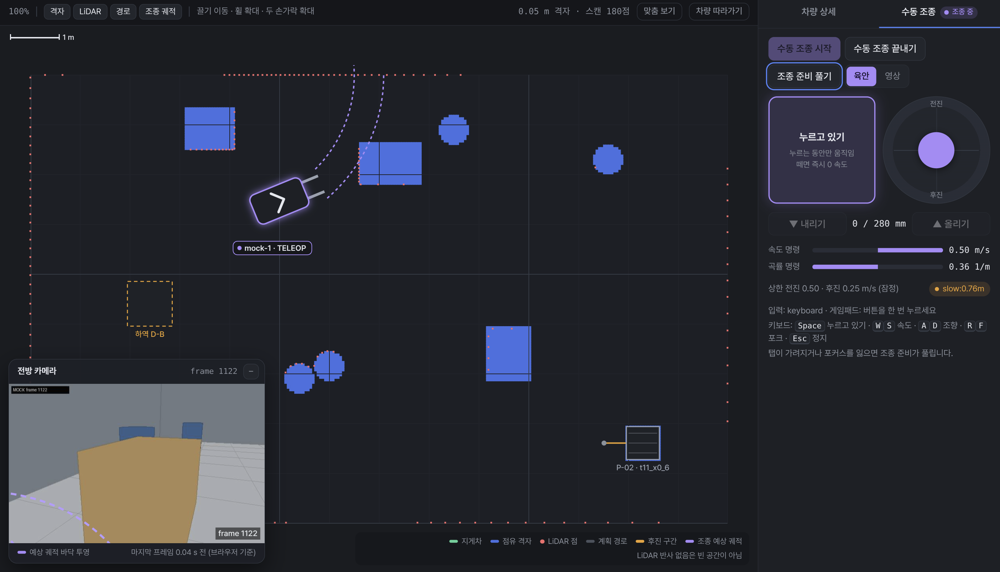
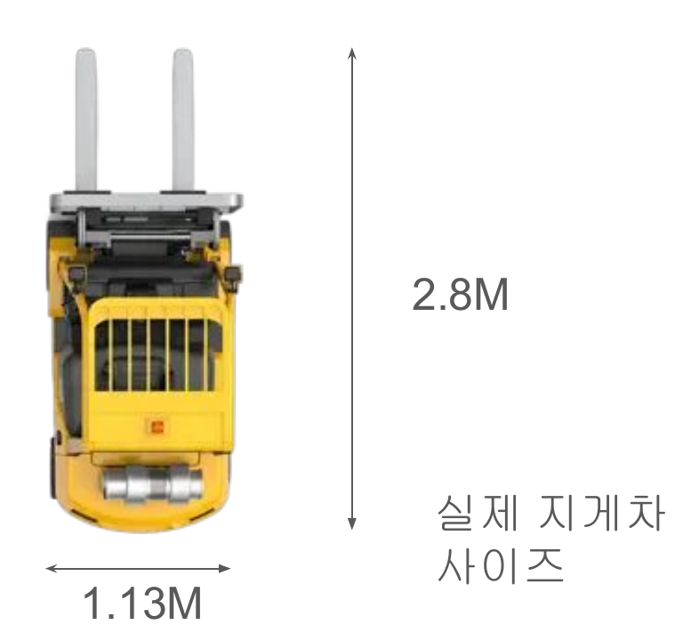

지게차 한 대를 브라우저 화면 하나로 보고, 지시하고, 직접 운전



지금까지는 ws1 터미널에서 명령을 넣었지만, 이제는 지게차 옆에서 폰으로 바로 다룹니다
브라우저가 지게차의 게이트웨이에 붙고, 실차와 Isaac은 같은 로봇 스택을 공유
| 구분 | 방식 |
|---|---|
| 접속 기기 | 폰, 태블릿, 노트북 |
| 설치 | 없음 (브라우저) |
| 입력 | 터치, 키보드, 게임패드 |
| 무선 연결 | Jetson이 Wi-Fi AP (1:1) |
| 연결 대상 | Isaac 완료, 실차 예정 |
시뮬레이션에서 쓰는 화면과 기능을 실차에서도 그대로 쓰도록 맨 아래 구동부만 바꿉니다
가운데 지도와 그 위 카메라 창, 오른쪽 차량 상세로 나눈 차량 관제 화면 형식

12345| 영역 | |
|---|---|
| ① | 연결 대상, 운행 모드, 조종 권한 |
| ② | 지도 (격자, LiDAR, 경로) |
| ③ | 전방 카메라 |
| ④ | 차량 상세와 수동 조종 탭 |
| ⑤ | 모니터링, 이벤트 기록, 통신 |

폰에서는 같은 내용이 카메라, 수동 조종, 지도 순서로 세로로 쌓입니다
작업 종류, 대상, 확인 세 단계로 지시하면 미션 진행을 단계별로 표시



관찰→접근→삽입→들기→빼기→운반→내리기→후퇴→복귀
지도에서 대기 중인 팔레트를 누르면 그 팔레트가 골라진 채로 바로 대상 설정이 열립니다
조이스틱이나 게임패드로 몰고, 갈 경로를 지도와 카메라 바닥에 미리 표시

| 구분 | 방식 |
|---|---|
| 입력 | 화면 조이스틱, 게임패드, 키보드 |
| 미리 보기 | 지도와 카메라 바닥에 예상 경로 |
| 포크 | 올리기, 내리기 버튼 |
| 조종 방식 | 눈으로 보며, 영상만 보며 |
조종 예상 궤적
자동 주행 중에도 일시정지하고 수동 조종으로 바꿔 차를 옮길 수 있습니다
리보틱스가 실제 현장 작업에 맞춰 보낸 시연 시나리오 다섯 가지
남은 기간에 모두 하기는 어려우니 구현할 수 있는 범위에서 골라 진행하자는 제안을 함께 받았습니다
길이 비율 0.52, 폭 비율 0.56으로 줄이면 통로 폭 약 2 m, 트레일러 폭 약 1.4 m

| 항목 | 시나리오 | 우리 축척 (×0.52–0.56) |
|---|---|---|
| 지게차 길이 × 폭 | 2.8 × 1.13 m | 1.46 × 0.63 m (우리 차체) |
| 좁은 통로 폭 | 3.8 m | 1.98–2.12 m |
| 구역 사이 간격 | 3.4 m | 1.77–1.90 m |
| 트레일러 안쪽 폭 | 2.6 m | 1.36–1.45 m |
| 컨베이어 높이 | 약 0.7 m | 0.37–0.39 m |
길이와 폭의 비율이 7 % 달라, 어느 쪽을 기준으로 줄일지 리보틱스에 확인합니다
일자·랜덤 배치는 1차 목표, 좁은 공간은 조건부로 경로 확보, 컨베이어는 높이 협의
| 시나리오 | 걸리는 점 | 판단 (경로 계획 기준) |
|---|---|---|
| ③ 일자 배치 | 앞 팔레트를 옮긴 뒤 다음 팔레트 다시 찾기 | 1차 목표 |
| ④ 랜덤 배치 | 다음 팔레트 고르기, 하역 칸 배정 | 1차 목표 |
| ① 좁은 통로 | 구역 사이 간격 위 칸끼리 경로 확보 (전후진 전환 14–29회) | 일부 조건 확보 |
| ⑤ 트레일러 | EPAL 6 1열은 꺼내기와 넣기 확보, T11 2열은 경로 미확보 | 1열 조건 확보 |
| ② 컨베이어 | 포크 최고 높이 0.32 m, 축소 높이는 0.37 m | 높이 협의 |
LiDAR가 1.05 m 높이라 바닥 팔레트와 낮은 rack 부재는 카메라와 미리 받은 배치로 보완해야 합니다
Isaac에서 일자·랜덤 배치 팔레트를 인식해 하역하고 복귀까지 자율 주행
접근 경로운반 경로복귀 경로하역 위치
카메라로 팔레트를 찾고 SLAM으로 위치를 잡아, 사람 지시 없이 집기부터 복귀까지 마쳤습니다
실패는 대부분 삽입 전 재관측, 좁은 공간은 이웃 팔레트 구분과 위치 추정 오차가 과제
| 시나리오 | Isaac 결과 | 막힌 점 |
|---|---|---|
| ③ 일자 배치 | 5회 중 2회 완주, 1회는 하역 오차 9.8 cm | 삽입 전 재관측 실패 2회 |
| ④ 랜덤 배치 | 4회 중 1회 완주, 1회는 하역 오차 9.5 cm | 뒤 팔레트가 겹쳐 보여 재관측 방향 어긋남 2회 |
| ⑤ 트레일러 | 팔레트를 꺼낸 뒤 운반 중 정지 | 위치 추정 오차 최대 16 cm, 벽 옆에서 주행 허가 차단 |
| ① 좁은 통로 | 삽입 전 재관측이 옆 칸 팔레트를 인식 | 이웃 팔레트 구분 |
팔레트가 가까이 붙은 장면에서는 삽입 전 재관측과 하역 위치 정밀도가 다음 과제입니다
일자·랜덤 배치 연속 이송을 먼저 완성하고, 좁은 공간은 이웃 팔레트 구분 뒤 진행
| 단계 | 대상 | 할 일 |
|---|---|---|
| 1단계 | ③ 일자, ④ 랜덤 | 삽입 전 재관측 안정화, 다음 팔레트 선택과 하역 칸 배정 |
| 2단계 | ① 좁은 통로, ⑤ 트레일러 | 이웃 팔레트 구분, 위치 추정 오차 줄이기 |
| 3단계 | 실차 | 같은 장면을 바닥에 표시해 실차로 시연 |
| 보류 | ② 컨베이어 | 스테이션 높이를 0.23 m 이하로 협의 |
1단계는 운용 콘솔로 미션을 연달아 지시하는 기능 위에 팔레트 선택과 하역 칸 배정을 더하는 일입니다
운용 콘솔로 Isaac 지게차를 지시하고 운전, 시연 시나리오는 일자·랜덤 배치부터
| 리보틱스에 확인할 것 |
|---|
| 축척은 길이와 폭 중 어느 비율을 기준으로 하나요? |
| 미션마다 지시하나요, 한 번 지시로 전부 옮기나요? |
| 팔레트와 빈칸의 위치를 미리 알려 주시나요? |
| 집기와 내려놓기 칸을 구역 사이 간격 위로 정해도 되나요? |
| 트레일러는 초기 검증을 팔레트 한 줄 배치로 해도 되나요? |
| 허용 오차는 어느 축 기준이고, 축소 환경에서도 같은 값인가요? |
| 컨베이어 높이를 0.23 m 이하로 낮출 수 있나요? |
| 대여해 주실 센서는 Gemini 335(USB)와 335Le(Ethernet) 중 어느 것인가요? |
다음 목표는 일자·랜덤 배치 시나리오를 Isaac에서 연속 이송으로 완주하는 것입니다